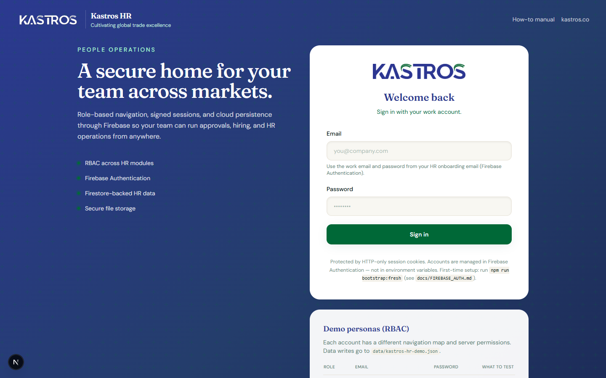
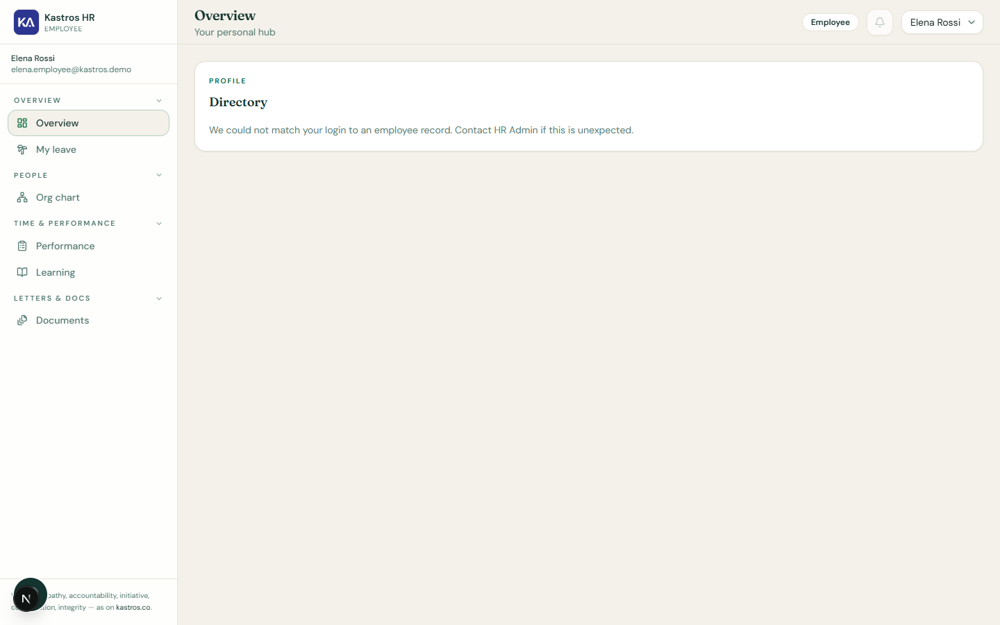
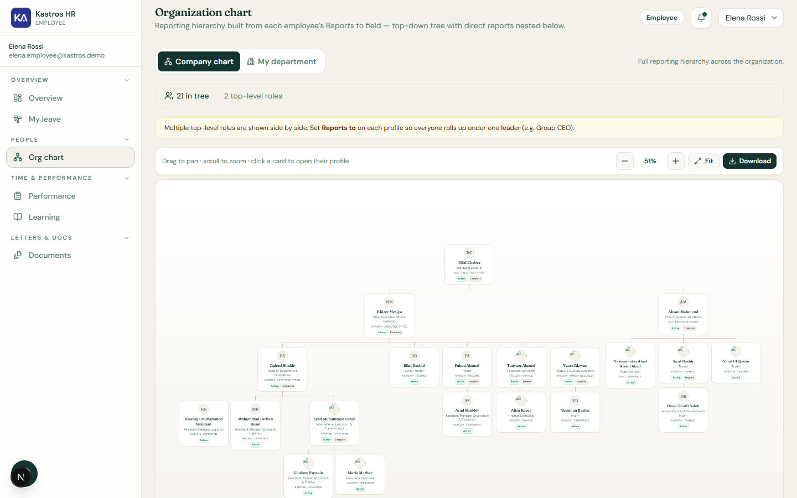
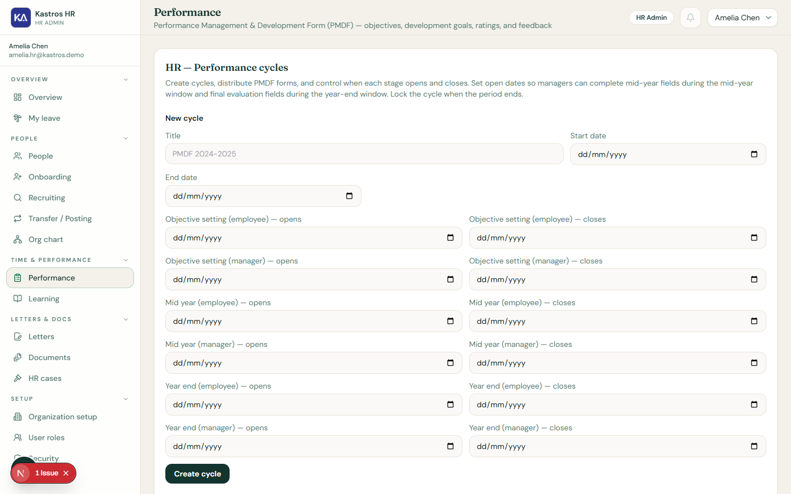

One secure platform for hiring, onboarding, daily HR operations, performance, compliance, and executive visibility —
built for multi-location trading and corporate operations.
Document version: July 2026 · Platform: Kastros HR (Next.js 15 + Firebase) Prepared for prospect evaluation and sales conversations
Kastros HR is a modern, browser-based human resources platform designed for trading and corporate groups
operating across multiple countries and business units. It replaces disconnected spreadsheets, email approvals, and folder-based
personnel files with one secure system your employees actually use.
What your organisation gains: Faster hiring cycles, auditable leave and performance processes, executive visibility
without manual reporting, and compliance artefacts (policies, CoI, training) stored where auditors expect them.
Problems we solve
Fragmented employee data — profiles, documents, and salary scattered across drives and inboxes.
Opaque leave tracking — managers and HR lack a shared approval queue with balances.
Slow hiring — applicants emailed as PDFs; duplicate data entry at hire.
Performance on paper — annual review forms without phase control or scoring consistency.
Compliance gaps — policy sign-offs not provably timestamped.
No executive dashboard — leadership asks HR for headcount and pending items weekly.
Training ad hoc — decks emailed; completion not tracked.
Weak audit trail — cannot answer “who changed this record?”
Why Kastros HR — key differentiators
End-to-end lifecycle in one product — public apply → onboard → operate → develop → comply; not five vendors.
Manager-as-reporting-line — line managers approve leave and PMDF without a fourth login tier or per-manager licensing.
Multi-BU native — UAE, Karachi, Multan with AED/PKR currency contexts built into profiles and compensation.
Each stage connects to the next without exporting CSVs or re-keying names and emails.
Value outcomes by stakeholder
Stakeholder
Before Kastros HR
After Kastros HR
Employee
Emails HR for leave balance; hunts for policies
Dashboard + My leave + Documents self-service
Line manager
Approves leave via email; no audit trail
Notification → approve in app; logged decision
HR team
Multiple spreadsheets; duplicate hire entry
Single people record; recruit→onboard prefill
CEO
Weekly status requests to HR
Live company pulse dashboard
IT
HR files on shared drives
RBAC, audit log, cloud-hosted with security headers
Open the conversation: “How long does it take from approved candidate to active employee with login and letter — and how many systems do you touch?” Kastros HR collapses that to one onboard flow with prefilled application data.
Part B — Platform trust & security
IT and procurement buyers need more than feature lists. Kastros HR is built on a mainstream cloud stack with defence-in-depth access controls suitable for HR data classification.
Cloud architecture
Application layer: Next.js 15 (App Router) — server components and server actions for secure mutations.
Hosting: Vercel or equivalent edge/cloud deployment with environment-based configuration.
Middleware verifies session on every protected route; invalid/expired sessions redirect to login.
Request headers propagate user email and role to server components for policy checks.
RBAC — three layers
Route access — middleware + route map deny modules by role (employees cannot open /employees).
Server action policy — mutations validate session role and ownership before writing.
Row-level visibility — e.g. leave requests visible to requester, their manager (when Pending Manager), and HR/exec.
File security
Downloads authorised per artefact type — own files, manager scope, or HR-wide.
Upload size limits tuned for cloud host (4MB on Vercel Hobby; 20MB elsewhere).
Storage paths tied to employee, application, training, or document IDs — no open directory listing.
Audit log
Material mutations append to an append-only audit stream viewable in the Security module: onboarding, leave decisions, role changes, document registration, expense status changes, and more. Each entry records actor, description, and timestamp.
SMTP notifications
When SMTP environment variables are set, leave workflow sends parallel emails to managers, HR, and requesters — in addition to in-app notification bell items.
Security headers (production)
Header
Value / purpose
Strict-Transport-Security
max-age=63072000; includeSubDomains; preload
X-Frame-Options
DENY — clickjacking protection
X-Content-Type-Options
nosniff
Content-Security-Policy
Restricts scripts, frames, connect to self + Firebase/Google APIs
Referrer-Policy
strict-origin-when-cross-origin
Permissions-Policy
Disables camera, microphone, geolocation by default
poweredByHeader
Disabled — no Next.js fingerprint
IT buyer appendix
Question
Answer
Where is data hosted?
Firebase/Google Cloud region per project configuration; app on Vercel edge
SSO / SAML?
Roadmap — email/password today via Firebase Auth
Backup & DR?
Firestore native replication; export via GCP backup policies
Pen test / SOC2?
Customer-specific programmes available during enterprise rollout
Data residency
Configurable Firebase project region at provisioning
API access
Server actions today; public REST API Roadmap for integrations
HR Admin capabilities plus executive dashboard emphasis and User roles (Firebase role promotion).
Manager is not a fourth login
Important for prospects: Line managers do not receive a separate “Manager” product login or license.
Manager powers derive from the Reports to email on each employee profile. Anyone with an Employee login who has
direct reports automatically sees pending leave and PMDF actions for their team. This reduces cost and complexity versus
traditional HRIS per-seat manager tiers.
Leave: manager approves when status is Pending Manager and requester reports to them.
PMDF: line manager completes manager phases for direct reports.
Managers without reports use standard employee self-service only.
Module access matrix
Module
Employee
Manager (reporting line)
HR Admin
CEO
Dashboard
Own
Own
Ops tiles
Company pulse
My leave
Submit
Submit + approve team
Approve HR step
Approve HR step
People directory
—
—
Full
Full
Onboarding
—
—
Yes
Yes
Recruiting
—
—
Yes
Yes
Org chart
View
View
View
View
PMDF / Performance
Own form
Direct reports
All + config
All + config
Learning
Own
Own
Assign all
Assign all
Documents
Ack / CoI
Ack / CoI
Publish
Publish
Letters
—
—
Yes
Yes
Transfer / posting
—
—
Yes
Yes
HR cases
—
—
Yes
Yes
Organization / Settings
—
—
Yes
Yes
User roles
—
—
—
Yes
Security / audit
—
—
View
View
Public apply / manual
Apply / read
Apply / read
Manage / read
Manage / read
Part D — Module deep dives
The following sections walk through each major capability with screenshots from the demonstration environment, role-specific benefits, workflows, and rollout guidance. Use these pages in order during a structured demo or leave-behind for economic buyers and HR leaders.
Module deep dive · Live
Secure sign-in
Give every employee a branded, work-email login — no shadow spreadsheets, no shared passwords.

Sign-in screen — Firebase Auth with work email and password; automatic redirect to role-appropriate dashboard.
Who benefits — by role
Employee: Access personal dashboard, leave, documents, training, and org chart.
HR Admin: Full operational modules after authentication.
CEO: Executive dashboard plus HR capabilities and role management.
Typical workflow
HR creates the employee record during onboarding; Firebase account is provisioned.
Employee receives password reset / welcome email when SMTP is configured.
User signs in with work email; session cookie carries JWT with role claims.
Middleware routes authenticated users to dashboard; unauthenticated users to login.
Business value
Single front door reduces IT support burden and enforces consistent access policy.
Password reset flows through Firebase — no manual credential sharing.
Already-authenticated users skip login when returning to the app.
Configuration & rollout notes
Configure Firebase project credentials and SMTP for onboarding emails.
Map corporate email domain; each employee profile email must match login identity.
Session cookies are HTTP-only; role changes take effect after re-login.
Module deep dive · Live
Employee dashboard
Employees see what matters today — profile summary, leave balance, goals, probation reminders, and quick links — without hunting through menus.

Employee home — personal snapshot with leave estimate, assigned goals, and shortcuts to self-service modules.
Who benefits — by role
Employee: Primary landing page after login.
HR Admin / CEO: Can preview employee experience when impersonation is not needed — use employee test account in demos.
Submission appears in Recruiting as Submitted; HR reviews asynchronously.
Business value
Widens talent pool; no login barrier.
Separates candidate-facing fields from internal employment setup (department, BU, manager).
Reduces unqualified phone screens — full application visible upfront.
Configuration & rollout notes
Employment setup fields intentionally excluded from public form — completed at onboarding.
Ensure Firebase Storage / upload limits configured for certificate files.
Module deep dive · Live
Reporting channel (org chart)
Live org structure from manager relationships — no separate diagram tool to maintain.

Reporting channel — hierarchical view derived from Reports to email on each employee profile.
Who benefits — by role
All authenticated users: View reporting lines.
HR Admin: Maintains accuracy via profile manager email and hire order.
Typical workflow
Each profile stores Reports to (manager work email).
Org chart renders tree from CEO / top nodes downward.
Transfer/posting or profile edit updates chart automatically.
Business value
Always reflects current state — not a stale PowerPoint.
Helps employees understand escalation paths.
Supports reorgs without redeploying static charts.
Configuration & rollout notes
Onboard managers before direct reports.
Use consistent corporate email format for manager linkage.
Module deep dive · Live
Performance management (PMDF)
Run structured annual performance cycles with phased objectives, 80% business / 20% development weighting, and field lockdown by HR-controlled date windows.

PMDF performance forms — business objectives, development pillars, phased reviews, and printable evaluation output.
Who benefits — by role
Employee: Completes self-assessment sections when phase is open.
Line manager: Reviews and scores direct reports (reporting-line access, not a fourth login role).
HR Admin / CEO: Configures cycle date windows per phase; calibration and finalization.
Typical workflow
HR creates PMDF cycle and sets open/deadline dates for each phase (objective setting, mid-year, year-end, calibration, finalization).
Employee enters business objectives (must total 100% weight) and development objectives auto-distribute across five pillars.
Fields lock outside HR-defined windows — prevents out-of-phase edits.
Manager completes manager sections for direct reports when manager phase opens.
Scoring applies 80% business final rating + 20% development final rating for overall PMDP score.
Share /training-manual/how-to link in welcome email.
Use ?role=employee or ?role=hr query for targeted comms.
In-app ? button opens manual in new tab during work.
Business value
Cuts training cost — no separate LMS required for system adoption.
Always matches shipped product (same source as in-app help).
Prospects can review help content before purchase.
Configuration & rollout notes
Expenses modules hidden in manual when KASTROS_EXPENSES_ENABLED is false.
No authentication required — suitable for intranet and email links.
Part E — Cross-cutting capabilities
Notification types
In-app notifications aggregate actionable items by kind:
Kind
Examples
Typical recipient
approval
Leave pending manager / HR; your leave awaiting approval
Manager, HR, employee
recruiting
New applicant submitted; approved candidate ready to onboard
HR Admin, CEO
learning
Training overdue or due soon
Assignee, HR
policy
Policy acknowledgement pending
Employee, HR
people
Probation ending soon; CNIC expiry approaching
HR Admin, CEO
team
Team-scoped operational hints
Managers, HR
compliance
CoI or document compliance gaps
HR Admin
payroll
Reserved for future payroll workflow hooks
HR Admin
Appointment letter generation
From any employee profile, HR generates a formatted appointment letter pulling live data: name, title, department, business unit, joining date, probation, gross salary, statutory flags (Gratuity, EOBI, Provident Fund). Eliminates copy-paste errors from Word templates and ensures compensation on file matches the letter issued.
Corporate ID card
Print-ready corporate ID card from profile photo, employee ID, name, title, and department — standardised branding for UAE and Pakistan offices. Reduces dependency on external print vendors for routine new-hire badges.
LinkedIn job kit
Recruiting module supports collateral for external job posts (LinkedIn and careers pages) so HR markets openings consistently with internal job records and public apply links.
Transfer/posting module records moves between BUs with effective dates; compensation currency editable per profile.
Multi-currency compensation
Profiles store salary in AED, PKR, or USD with configurable allowance lines from the Settings catalog. Display formatting uses thousands separators for executive readability. Prepares for payroll integration without re-entry.
Public training manual — 20 modules
Shipped as part of the product — not an extra consulting deliverable:
Getting started
Roles & navigation
Employee daily workflow
Leave (employee)
Expenses (when enabled)
Documents
Learning & performance view
Org chart
HR setup overview
HR settings
HR organization
HR onboarding
HR people / profiles
HR leave operations
HR expense operations
HR documents
HR recruiting
HR letters, transfer, cases
HR CEO & security
Troubleshooting
Search supports keywords like probation, allowance, Pending HR. Share before go-live to accelerate adoption.
Part F — Product roadmap
Kastros HR is production-ready for core HR operations today. The following items extend the platform for prospects with advanced requirements:
Set KASTROS_EXPENSES_ENABLED=true in environment; hidden by default
Payroll UI
Roadmap
Compensation schema ready on profiles; payroll processing UI planned
Mobile-native apps
Roadmap
Responsive web today; iOS/Android clients planned
SSO / SAML
Roadmap
Enterprise IdP integration (Azure AD, Okta) on Firebase/custom token path
Multi-tenant SaaS
Roadmap
Single-tenant per customer today; shared SaaS for SMB segment planned
Sales talk track: Lead with live modules. Position expense claims as flip-a-switch for prospects needing T&E now. Position payroll as natural phase 2 — data model already captures gross, basic, and allowances. SSO and multi-tenant address enterprise procurement checklists without blocking mid-market deals today.
How many employees and in which countries/BUs do you operate today?
How do managers approve leave today — email, paper, or another system?
Where do you store employee files, contracts, and policy acknowledgements?
Do you run a formal annual performance cycle? What weighting do you use for business vs behavioural goals?
How do candidates apply — email CVs, LinkedIn only, or an ATS?
Who needs executive dashboards vs operational HR access?
Is SSO mandatory for procurement? When do you need expense or payroll in scope?
What audit or compliance frameworks apply (policy acks, CoI, training records)?
Objection handling
Objection
Response
“We already use Excel for leave.”
Excel cannot enforce manager→HR approval order, notify managers, or prove who approved. Kastros HR gives balances, workflow, and audit trail without losing flexibility on per-employee overrides.
“Managers won’t adopt another system.”
Managers use the same employee login they already have — no new credentials. They only see approval items for direct reports in notifications and leave queues.
“We need payroll on day one.”
Compensation is captured today on profiles with multi-currency and allowances; payroll UI is on roadmap with schema ready. Many clients run phase 1 HR ops and integrate payroll export in phase 2.
“Is this secure enough for HR data?”
Walk through Part B: Firebase Auth, JWT sessions, three-layer RBAC, CSP/HSTS headers, audit log, and file authorisation. Offer security questionnaire completion during enterprise deals.
“We need SSO.”
Acknowledge roadmap item; email/password via Firebase is production-ready now. For enterprise, discuss custom token / SAML timeline alongside contract.
“Implementation will disrupt HR.”
Three-week phased plan: master data week 1, people week 2, operations week 3. Public training manual reduces helpdesk load from day one.
Appendix — Competitive positioning
Position Kastros HR for mid-market trading and corporate groups that need depth without enterprise ERP complexity.
Dimension
Spreadsheets + email
Generic global HRIS
Kastros HR
Time to value
Immediate but brittle
6–12 months common
3-week structured rollout
Multi-BU UAE + PK
Manual
Configurable at cost
Native BU + currency contexts
Manager approvals
Email chains
Often per-seat manager module
Reporting-line — no 4th login
Recruit → hire data
Re-key everything
ATS + HRIS integration project
Built-in apply portal + onboard prefill
Performance (PMDF)
Paper / Word
Generic goals module
80/20 weighted PMDF with phase lockdown
Training adoption
PDF email blasts
Separate LMS fee
20-module public manual included
Audit trail
None
Varies by tier
Built-in audit log module
ROI themes (qualitative — tailor with prospect numbers)
HR hours saved: Eliminate re-keying applicant data at hire; bulk leave entitlements vs per-person spreadsheets.
Faster approvals: In-app notifications reduce leave approval cycle from days to hours.
Compliance risk reduction: Timestamped policy acks and CoI registry vs unsigned paper folders.
Executive time: CEO dashboard replaces weekly “send me headcount and pending leave” requests.
Recruiting quality: Structured applications with attachments beat unstructured email CVs.
Manager licensing: No per-manager seat fee — reporting-line model scales with org depth.
Tip for AE: Quantify one workflow in the discovery call (e.g. “How many leave emails per week × 5 minutes”) and attach a conservative savings estimate in the proposal appendix.
Appendix — Leave workflow reference
Accurate status model for sales and implementation teams:
Status
Meaning
Who acts next
Pending Manager
Employee submitted; awaiting line manager
Manager on Reports to email (Employee login)
Pending HR
Manager approved; awaiting HR final
HR Admin or CEO
Approved
Fully approved
—
Denied
Rejected at manager or HR step
Employee may submit new request
If no line manager is set on the employee profile, HR receives the request directly for final approval — configure manager emails during onboarding to enable the two-step chain.
Entitlement model
HR defines leave types and default days per year in Settings.
HR applies defaults to all employees for the calendar year (bulk operation).
Employee sees balances on My leave before submitting.
PMDF phase reference
HR sets open and deadline dates per phase. Fields outside the active window are locked for the relevant role.
Phase
Typical actor
Content focus
Objective Setting (Employee)
Employee
Business objectives (100% weight total); development pillars auto-weighted
Objective Setting (Manager)
Line manager
Review and align objectives
Mid Year Review (Employee / Manager)
Employee then manager
Progress comments, mid-year scores
Year End Evaluation (Employee / Manager)
Employee then manager
Final self and manager scores
Calibration
HR / leadership
Cross-team consistency
Finalization
HR
Lock final ratings
Closed
—
Read-only record; printable evaluation
Overall score: Business objectives final rating × 80% + Development objectives final rating × 20% = PMDP overall score. Rating bands map to HR actions (e.g. Below Expectations → PIP consideration).
Recruit → onboard data mapping
When HR clicks Onboard on an approved application, the following prefills into Add team member:
Name, father name, email, personal and company phone
Emergency contact name, relation, phone
Family / COI declaration fields from application
Role title (from application or job posting), location, employment type, probation months
Reports to email if captured on application
HR still completes: department, sub-department, business unit, joining date, and internal employment details. Education file attachments from the portal are not auto-copied — HR re-attaches on profile if required.
Appendix — FAQ for prospects
Do employees need a separate mobile app?
The platform is responsive in the browser on desktop and tablet today. Native mobile apps are on the roadmap; no app store install is required for go-live.
Can we hide expense claims until we are ready?
Yes. Expense modules are controlled by KASTROS_EXPENSES_ENABLED environment flag (default false). Manual modules hide expense content when disabled.
How many user roles exist?
Three login roles: Employee, HR Admin, CEO. Managers are not a separate product role — they are employees with direct reports who gain approval actions via the Reports to relationship.
Can the CEO approve leave?
Yes. CEO shares HR final approval permissions (Pending HR step) but cannot approve their own leave requests.
Is the training manual really public?
Yes. /training-manual/how-to requires no login — ideal for pre-go-live comms and in-app help links.
Where are files stored?
Firebase Storage in production (local fallback in development). Downloads require authorisation checks tied to the owning record.
Can we operate UAE and Pakistan in one tenant?
Yes. Business units (UAE, Karachi, Multan) with AED/PKR/USD on compensation support multi-country operations in one deployment.
What happens when someone changes role?
CEO updates role in User roles; Firebase custom claims update; user must sign out and back in for new permissions.
Do you support probation tracking?
Employee dashboard and CEO/HR dashboards surface probation end dates; alerts when within 10 days of probation completion.
Can we export data?
Firestore export via GCP tooling; profile and operational data accessible for integration. Formal customer export packages available during implementation.
How is this different from the management product overview?
This sales playbook is prospect-facing with screenshots, demo script, objection handling, and implementation phases. The executive product overview is an internal management briefing.
Appendix — Glossary
Term
Definition
BU
Business unit — e.g. UAE, Karachi, Multan operating entities
CoI
Conflict of Interest — template upload and signed employee submissions
PMDF / PMDP
Performance Management & Development Form / Programme — annual review methodology
RBAC
Role-based access control — Employee, HR Admin, CEO
Reporting line
Manager relationship via Reports to email on employee profile
Entitlement
Allocated leave days per type per employee per year
Pending Manager / Pending HR
Leave approval workflow stages
Firebase Auth
Google identity service for work email authentication
Firestore
Document database for HR operational data in production
JWT session
Signed cookie carrying user identity and role after login
Document control: Kastros HR Sales Playbook · Version July 2026 · Confidential sales material.
Regenerate PDF after platform updates: npm run docs:sales-pdf (requires Puppeteer and captured screenshots in docs/sales/screenshots/).
Screens captured from demonstration environment. For a live walkthrough or tailored proposal, contact your Kastros HR representative.